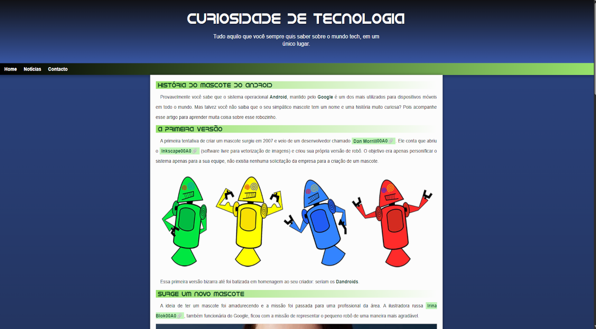
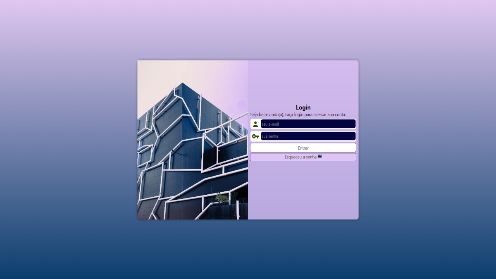
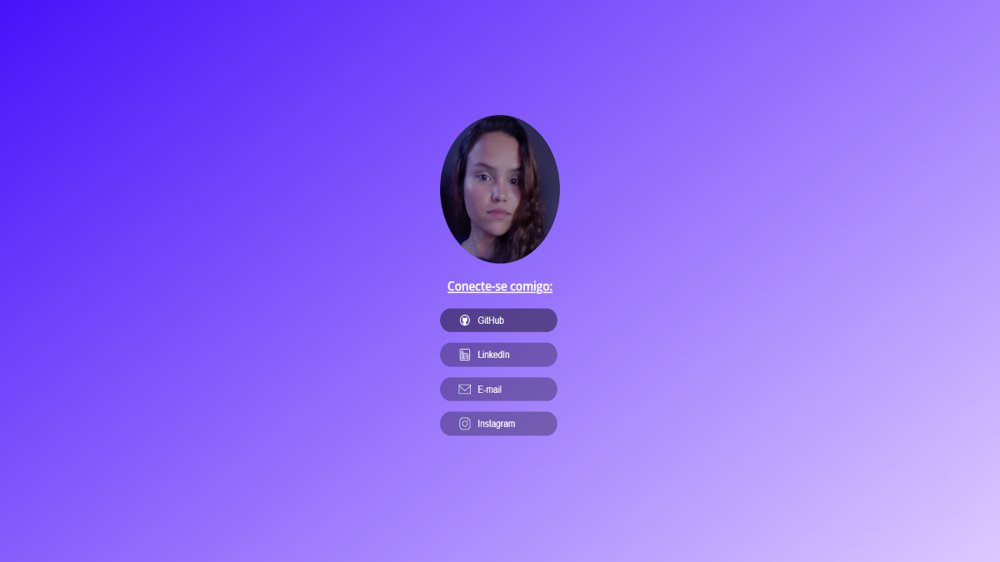
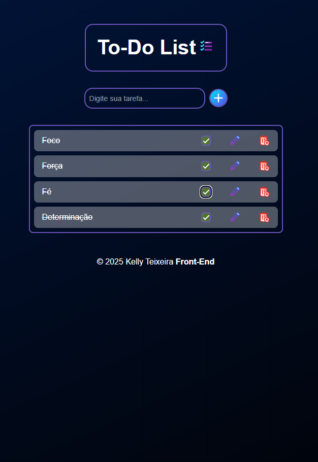

Olá, sou desenvolvedora Front-End dedicada a transformar ideias em interfaces funcionais, responsivas e otimizadas, sempre com atenção à usabilidade, acessibilidade e performance. Tecnologias utilizadas: HTML, CSS, JavaScript, além de frameworks modernos como React e Vite. Mais do que escrever código, meu diferencial é a capacidade de resolver problemas complexos de forma criativa e a busca incansável por aprendizado contínuo. Cada projeto é uma oportunidade de superar desafios, aprimorar minhas habilidades e entregar resultados que realmente impressionam. Sou movida por desafios e pelo desejo de evoluir constantemente, garantindo que cada solução que construo una eficiência e excelência na experiência do usuário.
Minhas Skills
HTML5
90%
CSS3
80%
JavaScript
60%
React
50%
Git
70%
GitHub
70%
Node.js
40%
Formação
2012 - 2015
Escola Secundária João Salim Miguel
12° Ano
2024 - 2025
Estudonauta Curso de Tecnologia
Desenvolvimento Web
Git e GitHub
Python
jul 2025 - nov 2025
Comunidade Dev Completo
Curso Front-end com React
Projetos

Maio - 2025
Projeto Cordel
Projeto construído para treinar efeito paralax em imagens.
Saiba mais...
Cordel é um site de poesia criado por Milton Duarte que mistura tradição e tecnologia de um jeito bem legal. No site, você vai encontrar uma poesia estilo cordel que fala sobre tecnologia, enquanto duas imagens ficam fixas no fundo, acompanhando a leitura de forma suave e moderna. É uma experiência simples, bonita e diferente para quem curte poesia e inovação.

Maio - 2025
Projeto Android
Projeto constrído para treinar conteúdos e imagens dinâmicas.
Saiba mais...
Projeto de site responsivo desenvolvido com HTML5 para estrutura semântica e CSS3 para estilização e efeitos visuais, utilizando Flexbox e Grid para organização do layout e media queries para adaptação em diferentes telas. O site apresenta uma navegação intuitiva e uma estrutura limpa, mostrando de forma clara a origem do mascote Android.

jun - 2025
Projeto login
Esta tela de login foi criada como protótipo funcional, ideal para integrar com backends reais. O foco principal é fornecer uma interface clara, responsiva e acessível, pronta para qualquer projeto web.
Saiba mais...
O Projeto de Tela de Login é uma interface moderna e responsiva, desenvolvida com HTML5 e CSS3, oferecendo uma experiência de usuário intuitiva e agradável. O design é limpo, funcional e adaptável a diferentes tamanhos de tela, servindo como base para futuras integrações com sistemas de autenticação e aplicativos web.

Ago - 2025
Social connect
Página de cartão de visitas digital responsivo, feita em HTML5 E CSS3.
Saiba mais...
SocialConnect é uma página de apresentação pessoal que organiza de forma clara e moderna todos os links de contacto e redes sociais. Desenvolvido com HTML5 e CSS3, o projeto é totalmente responsivo, garantindo compatibilidade e excelente visualização em desktops, tablets e dispositivos móveis. O layout utiliza Flexbox para centralização e alinhamento dos elementos, proporcionando uma experiência visual limpa e profissional. Ideal para portfólio ou apresentação digital de contactos.

Set - 2025
Projeto To-Do List
To-Do List interativa com validação de input, marcação de tarefas concluídas, edição e remoção de itens.
Saiba mais...
Aplicação To-Do List desenvolvida com HTML5, CSS3 e JavaScript puro, projetada para oferecer uma experiência simples e intuitiva de gerenciamento de tarefas. Permite adicionar, editar, marcar como concluídas e remover tarefas de forma dinâmica, utilizando manipulação eficiente do DOM e tratamento de eventos. O layout é totalmente responsivo, adaptando-se a diferentes tamanhos de ecrã, ideal para quem deseja aprimorar habilidades em front-end e consolidar conceitos fundamentais de interatividade e usabilidade na web.